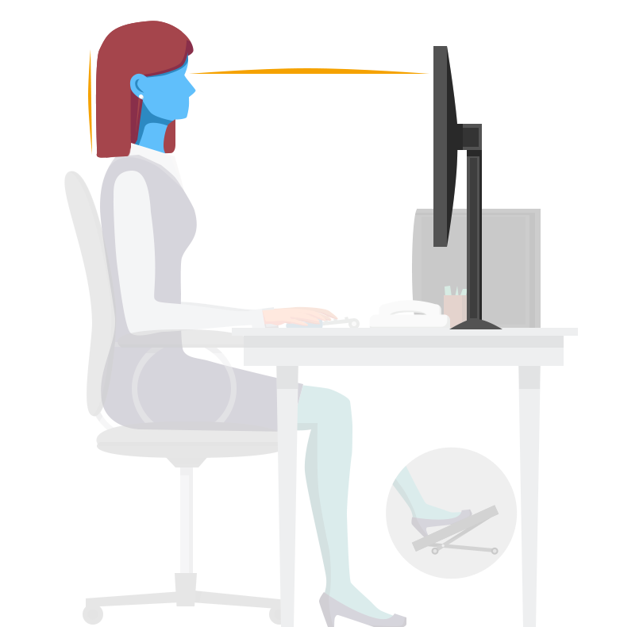
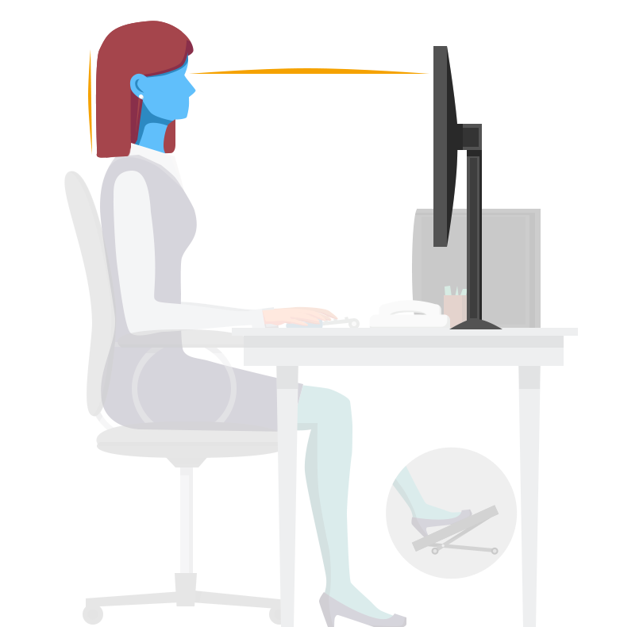

- Ajuster votre chaise ou gonfler le ballon de manière à avoir les avants-bras à angle droit avec les bras et
posés sur le bureau. Les épaules doivent être détendues.
- Avoir les pieds bien ancrés et les genoux à hauteur des hanches. Utiliser un marche pied si nécessaire.
- Se tenir droit en gardant la cambrure du dos. Si possible, adapter votre dossier.
- Garder votre matériel à portée de main pour éviter d'avoir à vous étirer ou vous pencher.
- Régler la hauteur de l’écran de manière à avoir la première ligne de texte à hauteur des yeux ou légèrement
en dessous et la tête droite.


 
